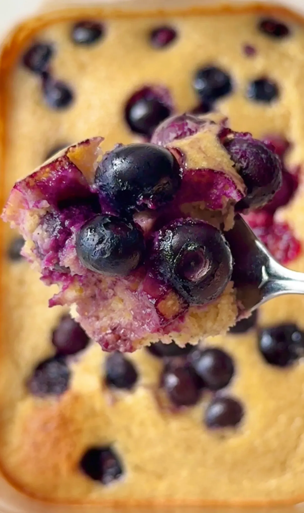

Blueberry Muffin Pancake Bowl (gluten free, refined sugar free & ready in under 20 minutes)
i am officially obsessed with this blueberry muffin pancake bowl. all the flavours of a blueberry muffin, none of the faff, ready in under 20 minutes, and it comes out so fluffy every single time. it's a single serve baked pancake bowl and it has become my go-to breakfast when i want something that feels like a treat but is super quick and easy to make. all you do is throw all the ingredients together in an oven safe bowl which means minimal washing up too!
if you're new to the pancake bowl trend, the concept is so simple: everything goes into a small oven-safe dish and bakes into something that is softer and fluffier than a regular flat pancake. it's also completely hands-off once it's in the oven, which makes it much better for mornings when you don't want to stand over a pan for 30 minutes flipping away. this version nails that blueberry muffin quality because the oat flour gives it that slightly dense, muffin-like crumb and the juicy blueberries burst and jamify as they bake, which is pretty ideal. the first time i made it i was surprised by how much it actually tastes like a blueberry muffin rather than just a baked egg situation, which was my fear lol.
let's talk about the blueberries for a second: fresh blueberries work beautifully, but frozen actually might be my preference for this recipe. they go in straight from the freezer, no thawing, and as they bake they release their juices into the batter and create little pockets of jammy, sweet blueberry throughout the bowl. fresh gives you a cleaner bite, frozen bluebs give you more of that muffin-bakery quality. both are great and will work, i just always have frozen fruit on hand which makes it easier. as for how many to add, the recipe says measure with your heart and i mean that. i usually add enough to cover most of the top of the batter. but more blueberries is never the wrong answer here lol, add as many or as little as you desire.
the oat flour and greek yogurt are what make this bowl super satisfying to eat. oat flour keeps it light and gives the batter a gentle structure without making it heavy, and it's a great source of beta-glucan fibre which supports gut health and keeps you full for longer. the yogurt adds protein, live cultures and creaminess; it is what gives the bowl its soft, slightly moist interior rather than a dry texture. together they make this blueberry muffin pancake bowl feel much more substantial than the ingredient list suggests. the greek yogurt and egg together are also giving us a bit of a protein boost which is ideal if you want to prep these for breakfast. the pancake bowl alone has approx 17g of protein (see the FAQ about adding in protein powder!).
a little of the nutrition science: blueberries are one of the most antioxidant-rich fruits available, packed with anthocyanins which have well studied anti-inflammatory and brain health benefits. oat flour's beta-glucan fibre actively feeds beneficial gut bacteria and helps stabilise blood sugar after eating, which is particularly useful at breakfast. the egg provides all nine essential amino acids and is one of the most bioavailable sources of protein you can eat. maple syrup brings a small amount of zinc and manganese alongside its natural sweetness. so we have a mini nutritional powerhouse in this single serving pancake bowl.
the prep is literally just 10 minutes. whisk the egg, yogurt and maple syrup together in your oven-safe dish, fold in the baking powder and oat flour, scatter the blueberries over the top, and into the oven at 170°C (160°C fan) for 16 to 18 minutes. the top should look matte and set when it's ready. since these are made in oven safe containers, i love using glass meal prep containers so i can feel good about heating them up in the oven and then just popping it back in the fridge for the next morning.
this blueberry muffin pancake bowl may seem like it's just for breakfast, but like with pancakes you can make this at any time of day. it's the perfect snack or more filling sweet treat for when you want something that isn't overly indulgent but still satisfies your sweet tooth.
if you love a baked pancake bowl, my lemon drizzle pancake bowl is the one to try next if you're in more of a spring or summer mood and want something bright and refreshing. or if you want something richer and completely added sugar free, my banana chocolate pancake bowl is a really good shout. both use the same format of minimal prep and time and they are just as simple to pull together.
Frequently Asked Questions
How should I store the blueberry muffin pancake bowl?
this is a single serve recipe so chances are it won't last long enough to need storing, lol. but if you do have leftovers or want to make it ahead, it can be kept at room temperature for a few hours or stored in the fridge overnight. best eaten within 2 to 3 days. reheat in the microwave for 30 to 40 seconds or in the oven at a low temperature until warmed through.
Can I use frozen blueberries?
yes and they work really well. add them straight from frozen without thawing first because as they bake they release their juices into the batter and give you those gorgeous jammy pockets throughout the bowl. thawing them first releases too much liquid before they even go in the oven and can make the batter wet and heavy. fresh blueberries give a cleaner, more structured bite if that's what you prefer, but frozen is a completely valid option and available year round which makes this recipe less seasonal.
Can I add protein powder to make this higher protein?
yes, add one scoop of vanilla or unflavoured protein powder along with the oat flour. protein powder absorbs liquid so you'll need to add a small splash of milk, plant milk or water to keep the batter at the right consistency. add a little at a time and stop when the batter looks similar to the original. the bowl will be slightly denser with protein powder but still fluffy and good.
Can I make this blueberry muffin pancake bowl dairy free?
yes, swap the greek yogurt for a thick plant based yogurt, a coconut or soy based greek style option works best. avoid thin or watery plant-based yogurts as they'll make the batter too loose and the bowl won't set as well. everything else in the recipe is already dairy free. just note that subbing the yogurt will change the protein content and macros.
What dish should I bake this pancake bowl in?
a small oven-safe ceramic ramekin or bowl that holds around 300 to 400ml is the sweet spot. if your dish is too large the batter spreads thin and you lose the fluffy, thick quality that makes this feel like a proper blueberry muffin. if it's too small the batter may overflow slightly as it puffs up in the oven. an oven-safe small meal prep container works perfectly or a ramekin of a similar size will do the job too.
How do I know when the pancake bowl is done?
the top should look set and matte rather than shiny or wet. the edges will have pulled away very slightly from the sides of the dish. the centre can have a tiny bit of softness when you gently press it because it continues to firm up as it cools. if the top still looks wet or liquid after 18 minutes, give it another 2 minutes and check again. overbaking will dry the bowl out so check early rather than leaving it. you can also always use the toothpick test to check doneness, a few crumbs is totally fine as it is intended to be a lil moist.
Can I meal prep this blueberry pancake bowl ahead?
this recipe is single serve and bakes in under 20 minutes so it's quick enough to make fresh most mornings. that said, you can bake it ahead and store in the fridge for up to 2 days. reheat in the oven at a low temperature or in the microwave for 30 to 40 seconds. it's best fresh but still really good reheated, and having it ready to grab from the fridge is a solid breakfast meal prep option.
Is this recipe gluten free?
yes, oat flour is naturally gluten free. if you have coeliac disease or high gluten sensitivity, use certified gluten free oat flour as standard oats can sometimes be cross contaminated with gluten during processing.
Can I reduce or omit the maple syrup?
yes. the maple syrup adds sweetness and a little extra moisture to the batter. if your blueberries are very ripe and sweet you could reduce it to 1 tablespoon or omit it entirely if you prefer a less sweet bowl. keep in mind that removing it completely will make the batter slightly drier, so you may want to add a small splash of milk to compensate. you can also sub the maple syrup for your favourite liquid sweetener.
Pro Tips
- Fold in the oat flour until just combined and stop there — overmixing activates the gluten in oat flour and makes the bowl dense and flat rather than fluffy.
- If using frozen blueberries, add them straight from the freezer without thawing.
- The top should look set and matte with no shiny or wet patches, while the very centre can have a tiny bit of give that firms up as it cools.
- Use a small oven-safe dish or ramekin.
Blueberry Muffin Pancake Bowl

Ingredients
Instructions
- Step 1: Preheat the oven to 170°C / 160°C fan.
- Step 2: In a small oven-safe dish, crack in the egg, add the yogurt and maple syrup and whisk until combined.
- Step 3: Fold in the baking powder and oat flour until just combined. Don't overmix.
- Step 4: Scatter the blueberries over the top.
- Step 5: Bake for 16 to 18 minutes until the top is set and matte.
- Step 6: Enjoy straight from the dish!
Nutrition Facts
Per one serving:
*Nutritional information is estimated and will vary depending on the ingredients and brands you use. Basic macros don't reflect the full nutritional value including vitamins, minerals, antioxidants, and other beneficial compounds. Please use this as a guideline only.